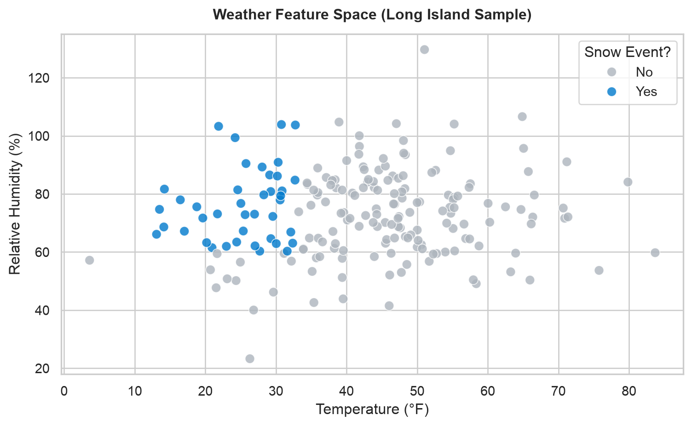

Weather API & Machine Learning Snow Predictor
K-12 Data Science: REST APIs, Feature Scaling, and Interactive Neural Network Classification
Affiliate Disclosure: Some links below are affiliate links. If you purchase hardware or data tools through these links, this site earns a small commission at no additional cost to you, helping fund our K-12 STEM outreach programs.
Project Overview
Welcome to the Weather API & Machine Learning Snow Predictor lab module. In this project, students act as data scientists and meteorologists by querying historical weather archives from the Open-Meteo API, scaling features using Pandas and NumPy, and training a neural network classifier using TensorFlow/Keras to predict snow events based on temperature and relative humidity.
Pipeline: API Data Ingestion → Feature Normalization → Neural Network Training.
Bill of Materials & Equipment
| Component | Specifications / Model | Purpose / Role | Source / Affiliate Link |
|---|---|---|---|
| Workstation Computer | Python 3.10+ / Google Colab / VS Code | Executes data ingestion and model training | View on Amazon |
| Data APIs | Open-Meteo Historical Weather API | Provides free multi-year meteorological records | Open-Meteo |
| Machine Learning Stack | TensorFlow, Keras, Scikit-Learn | Builds and evaluates neural network models | View Package |
| Data Visualization | Plotly & Seaborn | Interactive charts & feature distribution plots | View Package |
Step 1: Querying the Weather API
First, we connect to the Open-Meteo historical forecast API to pull hourly temperature, humidity, and snowfall records for Long Island, NY (lat: 40.8665, lon: -73.0357).
#| eval: false
import openmeteo_requests
import requests_cache
import pandas as pd
from retry_requests import retry
# Setup API Client with caching and error retry
cache_session = requests_cache.CachedSession('.cache', expire_after=3600)
retry_session = retry(cache_session, retries=5, backoff_factor=0.2)
openmeteo = openmeteo_requests.Client(session=retry_session)
url = "https://historical-forecast-api.open-meteo.com/v1/forecast"
params = {
"latitude": 40.8665,
"longitude": -73.0357,
"start_date": "2022-12-26",
"end_date": "2024-12-26",
"hourly": ["temperature_2m", "relative_humidity_2m", "precipitation", "snowfall", "snow_depth"],
"temperature_unit": "fahrenheit",
"precipitation_unit": "inch"
}
responses = openmeteo.weather_api(url, params=params)
response = responses[0]
print(f"Retrieved data for coordinates: {response.Latitude()}°N, {response.Longitude()}°E")Step 2: Interactive Data Explorer
Hover over the data points below to inspect how temperature and humidity interact across our regional weather dataset.
Step 3: Building and Training the Neural Network
Students construct a simple sequential deep learning classifier to predict snow occurrences:
#| eval: false
import tensorflow as tf
from tensorflow.keras import layers
from sklearn.model_selection import train_test_split
from sklearn.preprocessing import LabelEncoder
# Prepare labels (Snow: Yes/No) based on snowfall threshold
hourly_df['Snow'] = hourly_df['snowfall'].apply(lambda x: 'Yes' if x > 0.001 else 'No')
# Build feature matrix (x) and target vector (y)
f_names = ['temperature_2m', 'relative_humidity_2m']
x = hourly_df[f_names]
y_encoded = LabelEncoder().fit_transform(hourly_df['Snow'])
# Train/Validation/Test Split
x_train, x_val_test, y_train, y_val_test = train_test_split(x, y_encoded, test_size=0.2, random_state=1)
x_test, x_val, y_test, y_val = train_test_split(x_val_test, y_val_test, test_size=0.5, random_state=3)
model = tf.keras.Sequential([
layers.Input(shape=(len(f_names),)),
layers.Dense(12, activation='relu'),
layers.Dropout(0.2),
layers.Dense(1, activation='sigmoid')
])
model.compile(loss='binary_crossentropy', optimizer='adam', metrics=['accuracy'])
model.summary()
# Train model
history = model.fit(x_train, y_train, epochs=20, batch_size=64, validation_data=(x_val, y_val))Pedagogical Goals & Implementation Notes
- API Literacy: Emphasize to students that modern engineering relies heavily on querying live REST APIs rather than static CSV files.
- Class Imbalance Handling: Notice the data balancing step in the background code (
df0.sample(len(df1.index))). Instructors should explain why training on 98% “No Snow” and 2% “Snow” produces a lazy AI that always guesses “No Snow”, and how downsampling solves this. - Feature Normalization: Walk students through Z-score scaling
(val - avg) / std. Without scaling, large magnitude features dominate gradient descent.
Assessment Rubric
- API Integration (25%): Successfully retrieved and parsed multi-year weather arrays into Pandas DataFrames.
- Data Preparation (25%): Properly formatted and normalized input features (
Temp0,Humi0, etc.). - Model Construction (25%): Built and compiled a functional Keras neural network with correct input shapes and activation functions.
- Evaluation & Reflection (25%): Generated training loss/accuracy curves and correctly interpreted model performance.